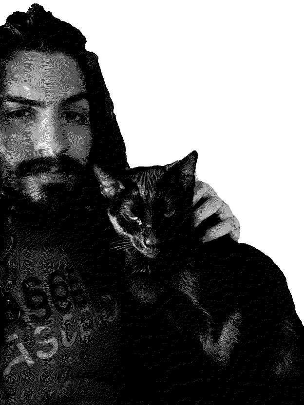

Wire-wrapping my first pendant
03/25/25
I'm a 19-year-old musician and naturalist writing about what I learn and what I like.And this is
my cat Bisi.
my cat Bisi.
now as of 6/3/26
Just wrapped up my fourth and best semester, and I’m hoping to graduate in just two more. Currently looking for internships in lieu of a second capstone.
The church gig has been going well; I’m diving into learning the organ because I may be leading a service or two this summer. I’ve also gotten on the roster for what functions as my university’s jazz booking agency—this has led me to playing my very first professional, well-paying jazz gigs. These were played on 64 unweighted keys without a sustain pedal, but still went swimmingly. Along the way, I played two oud gigs for National Arab American Heritage Month and had the opportunity to perform at Boston’s iconic Hatch Shell a few days ago!
Outside of music, I’ve been taking it easy. I’m attending weekly meditations at a Zen center near my church, playing pool at the thrift shop, watching sailing documentaries, reading Robert Pirsig, photographing basement shows, and enjoying a hand-me-down vintage radio receiver.
I’m looking forward to a summer of yum-yummyness. I hope yours is full of joy as well, rare reader!
latest posts
MBTA Signage in CSS
08/06/24Taking Photos for Plant Identification
01/20/24